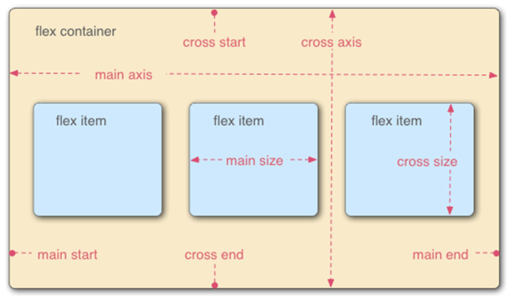
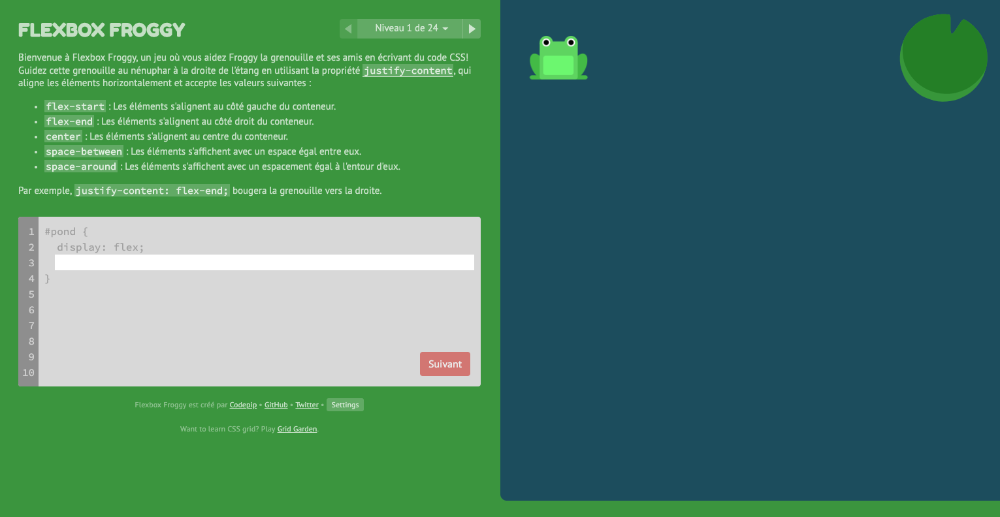
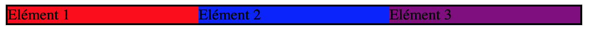
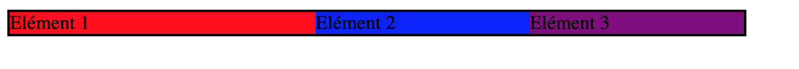
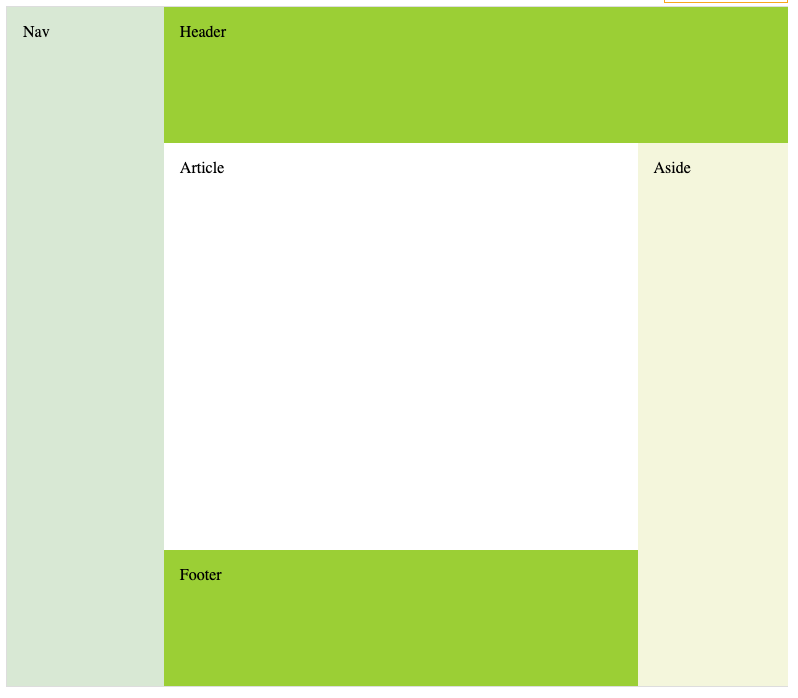

Séance 6 et 7 : Positionnement – les techniques actuelles
Compétences à acquérir lors de cette double séance (6 et 7) :
Cette séance vise à vous faire travailler sur les compétences liées à la mise en page en utilisant des techniques modernes.
- Comprendre les media Queries
- Comprendre les bases du modèle de boîtes flexibles et créer une mise en page avec
- Comprendre les bases du framework bootstrap
Introduction
De nombreuses techniques de positionnement existent, parfois anciennes et à proscrire, d’autres moins connues, d’autres encore récentes et « très en vogue ».
La propriété CSS display propose de nombreuses possibilités, plus de 40 valeurs possibles, chaque valeur définissant le type de boite utilisée pour le rendu de l’élément, du simple inline, ... , au modèle de boite flexible en passant par le modèle tabulaire ou le modèle de grille.
La nécessité de disposer d’une technique simple à utiliser, prévisible sur différentes tailles d’appareils (site web adaptatif ou responsive web design) a amené à la définition en CSS3 du modèle à base de boite flexible (Flexbox) aujourd’hui très en vogue que l’on peut directement mettre en œuvre.
Une alternative consiste à utiliser des classes CSS prédéfinies par des communautés, fournies dans des fichiers CSS (avec souvent du JavaScript), que l’on peut, sous réserve des licences prévues, utilisées. On trouve ainsi aujourd’hui de nombreux « frameworks CSS » tels que :
- Bootstrap : « The most popular HTML, CCS and JavaScript framework for developing responsive, mobile first projects on the web”;
- Foundation : “The most advanced responsive front-end framework in the world”;
- Bulma : “An open source CSS framework based on Flexbox”;
- Ulkit: “A lightweight and modular front-end framework for developing fast and powerful web interfaces”;
- Semantic UI : “A UI component framework based around useful principles from natural language”; Ou encore Clank, Skeleton, KickStart, Kube, PureCSS, KNACSS, GroundworkCSS, Cascade, Jeet, Milligram,…
Mais avant tout, il faut comprendre comment CSS3 permet la création de site web adaptatif.
Comprendre les media Queries
Contexte
Comme définit par alsacréation, la spécification CSS3 Media Queries définit les techniques pour l'application de feuilles de styles en fonction des périphériques de consultation utilisés pour du HTML.
Ces bonnes pratiques permettent d'exploiter encore plus les avantages de la séparation du contenu et de la présentation : l'intérêt est de pouvoir satisfaire des contraintes de dimensions, de résolutions et d'autres critères variés pour améliorer l'apparence graphique et la lisibilité (voire l'utilisabilité) d'un site web.
Toutes les plateformes sont concernées : navigateurs mobiles et tablettes, écrans à faibles résolutions, impression, tv, synthèses vocales, plages braille, etc. L’attribut media de la balise link ou la directive @media d’une feuille de style CSS permettent de préciser le contexte d’application des règles de style ;
les valeurs possibles sont : screen (écran), handheld (périphérique mobile de petite taille), print (impression), aural ou speech (synthèse vocale), braille (plage braille), embossed (imprimante braille), projection (projecteur), tv (téléviseur), tty (terminal).
Pour un contexte, il est possible d’adjoindre un panel de critères plus précis à l'aide de propriétés et de valeurs numériques, de préfixes min- et max- pour les critères numériques ainsi que de combinaisons multiples de ces mêmes critères. Le but est de cibler plus finement les périphériques de destination en fonction de leurs capacités intrinsèques. Parmi les critères, on peut citer :
- orientation (orientation du périphérique : portait ou landscape),
- résolution (résolution du périphérique en dpi, dppx, ou dpcm),
- min-width, width ou max-width (dimension en largeur de la zone d'affichage)
- height (dimension en hauteur de la zone d'affichage)
- device-width (dimension en largeur du périphérique),
Exemples
La requête s'effectue au sein du classique élément link.
<link rel="stylesheet" media="screen and (width:800px)" href="colors.css"/>
Elle peut également prendre place dans une règle @
@media screen and (width:800px){...}
Divers opérateur logiques combinent les requêtes : and , only et not. L'opérateur ou n'existe pas (utiliser la virgule). Voici la liste des critères requêtes généralement définis au sein d'une requête de média. Ajoutons à ces requêtes deux préfixes facultatifs min et max faisant office de "plus petit ou égal à" ou "plus grand ou égal à".
(min-color: 4)
(min-width: 800px)
(max-device-width: 800px)
(aspect ratio: 16/9)
@media print and (min-resolution: 320 dpi)
(min-device-pixel-ratio: 2)
S'auto-évaluer : savez-vous positionner des éléments dans une page web ?
Exercice 1
Mettons en pratique les bienfaits des Media Queries au sein d'un exercice consistant à adapter une mise en page à la largeur de l'écran. L'objectif à atteindre est de varier d'un affichage en trois colonnes à un affichage sur une colonne si l'écran est réduit ou si le visiteur navigue à l'aide d'un téléphone mobile.
Créez un fichier html dans lequel : le body sera constitué d'une seule div, l'id de la div sera main, la div sera composée de 3 paragraphes (avec 3 textes). Ecrivez les bons @media permettant d’obtenir le résultat de la vidéo ci-dessous.
Exercice 2
Créez une page html comportant une balise nav suivi d’un paragraphe. Placez dans la partie navigation une balise ul comportant 5 items.
A l’aide de la directive @media, faites que les items s’affichent horizontalement pour les largeurs d’affichages d’au moins 768px, verticalement pour les zones d’affichage plus petites, ne s’affichent pas lors de l’impression.
Comprendre les bases du modèle de boîtes flexibles
Plusieurs passages de ce cours sur flex-box sont extraits des (très bons sites) : Alsacréation, mozilla, la casccade. Certains passages ci-dessous sont extraits de ces tutos. On y retrouve les définitions des propriétés les plus utiles. Je vous encourage à faire entièrement ces tutos.
Nous venons de voir le modèle de boîte classique en CSS et ses dispositions de type block ou inline, sachez que Flexbox CSS3 a été conçu pour étendre ce périmètre en introduisant un nouveau modèle de boîte distinct, que l’on appellera “le Modèle de boîte flexible”. Au sein de ce schéma, on ne raisonne plus en block ou inline, ni même en float ou autres types de boîtes “classiques” CSS, mais en “Modèle de boîte flexible”, dont les quatre possibilités principales sont :
- Distribution horizontale ou verticale des éléments, avec passage à la ligne autorisé ou non,
- Alignements et centrages horizontaux et verticaux, justifiés, répartis,
- Réorganisation des éléments indépendamment de l’ordre du flux (DOM),
- Gestion des espaces disponibles (fluidité).
FlexBox (pour Flexible Box) est un mode de mise en page prévoyant une disposition des éléments d’une page de telle sorte que ces éléments possèdent un comportement prévisible lorsqu’ils doivent s’accommoder de différentes tailles d’écrans/appareils. Les points forts :
- Distribution des éléments horizontale ou verticale, avec passage à la ligne autorisé ou non,
- Alignements et centrages horizontaux et verticaux, justifiés, répartis,
- Réorganisation des éléments indépendamment de l’ordre du flux (DOM),
- Gestion des espaces disponibles (fluidité).
Un peu de vocabulaire :

1- Conteneur Flex (Flex Container)
L’élément parent dans lequel chaque élément flex sera contenu. Un conteneur flex est défini lorsque la propriété display possède la valeur flex ou inline-flex.
2- Élément flex (Flex item)
Chaque enfant d’un conteneur flex devient un élément flex. Le texte directement contenu dans un conteneur flex est englobé dans un élément flex anonyme.
3- Axes
Toute boîte suit deux axes : L’axe principal (main axis) sur lequel les éléments flex se suivent. L’axe secondaire (cross axis) est perpendiculaire à l’axe principal.
- La propriété flex-direction établit l’axe principal.
- La propriété justify-content définit comment les éléments flex sont positionnés le long de l’axe principal sur la ligne courante.
- La propriété align-items définit comment les éléments flex sont positionnés le long de l’axe secondaire sur la ligne courante.
- La propriété align-self définit comment un seul élément flex est aligné sur l’axe secondaire et surcharge le comportement par défaut défini par align-items.
4- Directions
Le début/fin du côté principal et du côté secondaire du conteneur flex décrit l’origine et la fin du flux d’éléments flex. Ils suivent l’axe principal et secondaire du conteneur flex dans le sens établi par writing-mode (gauche-vers-droite, droite-vers-gauche, etc.).
- La propriété order ordonne les éléments d’un groupe et détermine quel élément va apparaitre en premier.
- La propriété flex-flow raccourcis les propriétés flex-direction et flex-wrap pour positionner les éléments flex.
5- Lignes (Lines)
Les éléments flex peuvent être positionnés soit sur une seule ligne, soit sur plusieurs lignes via la propriété flex-wrap, qui contrôle la direction de l’axe secondaire et la direction dans chaque nouvelle lignes rajoutées.
6- Dimensions
Les termes désignant la hauteur et la largeur des éléments flex sont la taille principale (main size) et la taille secondaire (cross size), qui suivent respectivement l’axe principal et l’axe secondaire du conteneur flex.
- Les propriétés min-height et min-width ont une valeur initiale de auto.
- La propriété flex est un raccourci des propriétés flex-grow, flex-shrink et flex-basis pour établir la flexibilité des éléments flexibles.
flex-direction
La distribution, c’est à dire le sens d’affichage horizontal ou vertical des éléments "flex-items" est définie par la propriété flex-direction dont les valeurs peuvent être :
- row (distribution horizontale, valeur par défaut)
- row-reverse (distribution horizontale inversée)
- column (distribution verticale)
- column-reverse (distribution verticale inversée)
flex-wrap
La propriété flex-wrap définit si le contenu sera distribué sur une seule ligne (ou colonne selon l’axe principal) ou sur plusieurs lignes. En clair, si les "flex-items" ont le droit de passer à la ligne ou non. Les valeurs de flex-wrap sont :
- nowrap (les éléments ne passent pas à la ligne, valeur par défaut)
- wrap (les éléments passent à la ligne dans le sens de lecture)
- wrap-reverse (les éléments passent à la ligne dans le sens inverse)
justify-content et align-items
Flexbox propose de gérer très finement les alignements et centrages, en différenciant les deux axes d’affichage de cette manière :
- L’alignement dans l’axe principal est traité via la propriété justify-content
- L’alignement dans l’axe secondaire est géré avec align-items
Axe principal : justify-content
Les alignements dans l’axe de lecture principal sont définis à l’aide de la propriété
justify-content, dont les valeurs possibles sont :
- flex-start (éléments positionnés au début du sens de lecture, valeur par défaut)
- flex-end (éléments positionnés à la fin)
- center (position centrale)
- space-between (répartition “justifiée”)
- space-around (variante de répartition “justifiée”)
Dans l’axe secondaire (axe perpendiculaire à l'axe principal), les alignements sont régis via la propriété align-items, dont les valeurs sont :
- flex-start (au début)
- flex-end (à la fin)
- center (au centre)
- baseline (généralement identique à flex-start)
- stretch (étirés dans l’espace disponible, valeur par défaut)
Testez, avec votre enseignant, ce code pour comprendre les bases de flex.
Un guide très bien fait sur flex-box est disponible ici.
S'auto-évaluer : savez-vous positionner des éléments avec flex ?
Exercice 3
Le site https://flexboxfroggy.com propose quelques exercices très bien faits pour travailler le flex. Faisons en quelques-uns ensemble puis finissez à la maison.

Comprendre la mécanique de répartition des espaces
7- Taille minimale d’un élément
La propriété flex-basis détermine la base de flexibilité utilisée comme taille initiale principale pour un élément flexible avant réduction de sa taille ou avant redistribution de l'espace restant dans leur conteneur Flexbox. Testez ce code et faites varier flex-basis de main #div : auto ou 100px ou un pourcentage. Observez la largeur prise par l'ensemble des boites par rapport à la div#main qui fait 300 pixels de large.
8- Taille d’un élément relativement à celle des ses voisins
La propriété flex-grow définit le facteur d'expansion d'un élément flexible. Elle indique la quantité d'espace que l'élément devrait consommer dans un conteneur flexible relativement à la taille des autres éléments du même conteneur. Si tous les éléments voisins possèdent le même facteur d'expansion, ils recevront tous la même part d'espace.
Testez ce code, faites varier les valeurs de flex-grow et observez comment se répartissent les écarts.
Toujours avec ce code, entrez un long texte dans le permier item. vous devriez observer que les proportions définies avec flex-grow ne sont plus respectées.
Le calcul précis permettant de comprendre comment le rendu est fait est expliqué ici . C'est un peu technique. Surtout observez qu'il est recommandé d'utiliser flex-grow avec flex-basis9- Réduire la taille d’un élément relativement à celle de ses voisins
La propriété flex-shrink permet de définir comment un item peut rétrécir en fonction des éléments flexibles contenus dans le même conteneur.
La valeur par défaut est 1 (ce qui signifie que l'item ne rétrécit pas par défaut), et le facteur de rétrécissement est multiplié par le flex-basis lorsqu'il distribue l'espace négatif aux items flex.Qu'est-ce que l'espace négatif ? C'est l'espace qui excède la dimension du container principal. Avec flex-shrink, on répartit cet espace négatif, en multipliant pour chaque item sa taille initiale par le ratio de flex-shrink. Bref, à l'inverse de flex-grow, qui sert à répartir de l'espace positif entre les items en permettant leur agrandissement selon certaines proportions, flex-shrink sert à répondre à la question : “comment rétrécir de manière ordonnée mes items pour tout faire rentrer dans le container ? (définition issue de https://la-cascade.io/flex-shrink/)
Pour que pour que flex-shrink ait un effet visible, il faut que la somme des tailles par défaut des flex-items dépasse du conteneur.
Ouvrez ce code et testez les combinaisons
suivantes pour les valeurs de flex-shrink et retrouvez à quelle image cette combinaison
correspond :
(0,0), (1,0), (1,1), (1,4).


Je vous encourage à regarder ce site. Il contient un bon nombre d'animations qui aident à comprendre le comportement du positionnement par flex en fonction de la taille de la page.
10- Tout en 1
La propriété flex est une propriété raccourcie qui définit la capacité d'un élément flexible à modifier ses dimensions afin de remplir l'espace disponible de son conteneur. Les éléments flexibles peuvent être étirés ou réduits pour utiliser un espace proportionnel à leur coefficient de grossissement ou de rétrécissement afin de ne pas dépasser d'un conteneur. Les propriétés détaillées correspondantes à cette propriété raccourcie sont flex-grow, flex-shrink et flex-basis
Ce code contient 7 cas de figure différents. Etudiez chacun d'eux avec votre enseignant.
10 Création de layout avec Flex
Regardons ensemble l'exemple cet exemple qui permet de structurer le mise en page.
S'auto-évaluer : savez-vous utiliser flex pour structurer une page web ?
Codez maintenant ce layout en utlisant Flex

sachant que le html est
<nav class="outer-col-1">Nav</nav> <div class="outer-col-2"> <header>Header</header> <div class="inner-row"> <div class="inner-col"> <article>Article</article> <footer>Footer</footer> </div> <aside>Aside</aside> </div> </div>
Comprendre les fonctionnement de bootstrap
Bootstrap est un framework open source pour le développement en HTML, CSS et JS. Il permet de réaliser rapidement un prototype de vos idées ou de construire toute votre application grâce aux variables Sass, au système de grille réactif, aux nombreux composants préconstruits et aux puissants plugins basés sur jQuery. (définition bootstrap )
La version utilisée dans la suite est Bootstrap en version 4.1.1 (Avril 2018). Attention, la version 4 comporte des changements importants rendant inopérants de nombreuses classes des versions précédentes. Assurez-vous, que vous consultez bien une documentation correspondant à cette version. Il existe de très nombreux tutoriaux sur Bootstrap ; on peut citer par exemple :
- tutoriel Bootstrap 4 avec de nombreux exemples
- Bootstrap 4 Get Started
Il est impossible ici de passer en revue l'ensemble des fonctionnalités de la V4 de bootstrap. Je vous propose ici de voir l'essentiel.
Intégrer bootstrap à votre code :
- Si vous ne voulez pas télécharger et héberger Bootstrap 4 vous-même, vous pouvez l'inclure à partir
d'un CDN (Content Delivery Network).
<link rel="stylesheet" href="https://maxcdn.bootstrapcdn.com/bootstrap/4.1.0/css/bootstrap.min.css"> - Pour assurer un bon rendu et un zoom tactile, ajoutez la ligne suivante
<meta name="viewport" content="width=device-width, initial-scale=1">
Les container
Un conteneur fixe container est un conteneur à largeur fixe. Lorsque vous redimensionnez votre navigateur la taille est prédéfinie. Cela donne l'impression de passer instantanément d'une taille à une autre.
Un conteneur fixe container-fuild est un conteneur qui prend constamment toute la largeur de la page.
Testez ce code en faisant varier la largeur de la page pour comprendre le différence.
Bootstrap 4 Grid System
Bootstrap repose sur un système de grille permettant de découper un élément de classe row en 12 colonnes, colonnes qui peuvent être utilisées seules ou groupées.
Pour s’adapter aux différentes tailles d’écran, Bootstrap utilise 5 préfixes de classes :
- col- (extra small devices - screen width less than 576px)
- col-sm- (small devices - screen width equal to or greater than 576px)
- col-md- (medium devices - screen width equal to or greater than 768px)
- col-lg- (large devices - screen width equal to or greater than 992px)
- col-xl- (xlarge devices - screen width equal to or greater than 1200px)
Suffixé par une valeur entre 1 et 12, cela permet de préciser la taille occupée par un élément dans la ligne selon une taille d’écran. Par exemple, appliquer `class="col-sm-3 col-lg-2"` permettra à l’élément d’occuper un quart de l’espace de son parent de classe row pour les écrans de taille au moins égale à 576px mais seulement un sixième de l’espace à partir des écrans de taille au moins égale à 992px.
Étudiez cet exemple. Observez particulièrement le comportement de la cinquième ligne en fonction de la taille de la fenêtre.
S'auto-évaluer : savez-vous découper une page avec bootstrap ?
Codez la page permettant d'obtenir le résultat suivant :
Alignement horizontal et vertical
Dans cette version de Bootsrap, plusieurs mécaniques utilisent directement flex. C'est le cas de l'alignement. Dans cet exemple, chaque row à son attribut min-height définit à une taille prédéfinie. Comme pour Flex il est possible de spécifier comment s’alignent les boites. Dans cet exemple vous observerez qu'il n'y a pas de chiffre associé à chaque classe de colonne div class="col". C'est ce qu'on appelle de "l'auto-layout columns". Bootstrap divise simplement l'espace disponible en partie égales. Plus d'informations ici.
Ré-ordonner les boites.
Comme pour flex, il est possible de réordonner les boites en utilisant l'attribut order-*. Etudiez ce code.
Le Décalage de colonnes
Afin de laisser des espaces vides dans les row, il est possible de décaler les colonnes dans grille. Pour cela il faut utiliser l'attribut .offset-md-* qui indique, selon la largeur de l'écran (ici md), de combien de colonnes il faut se décaler avant d'intégrer le nouveau contenu. Etudiez ce code.
Les composants bootstrap
Dans cette version 4, bootstrap augmente encore le nombre de composants "prêts à servir" : boutons, carrousel, formulaires, fenêtres pop, progess bar, ... Ils sont listés ici
Une extrêmement utile est le composant navbar. Ce composant intègre (entre autre) les classes suivantes permettant de construire "facilement" une barre ne navigation standard. Étudions ensemble cet exemple.
S'auto-évaluer : savez-vous créer une page web avec flex et/ou bootstrap ?
Rendez-vous au prochain TP pour vous auto-évaluer.